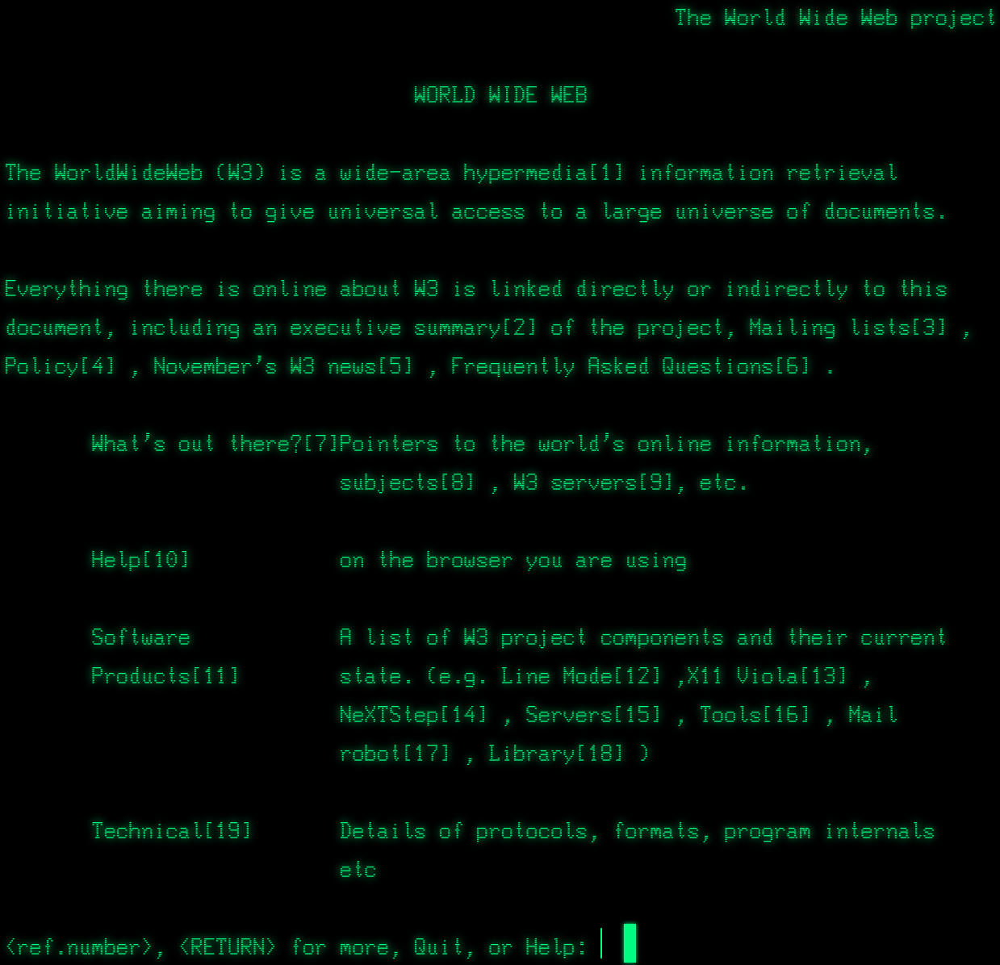
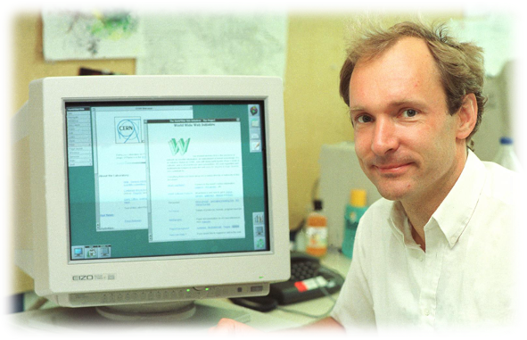
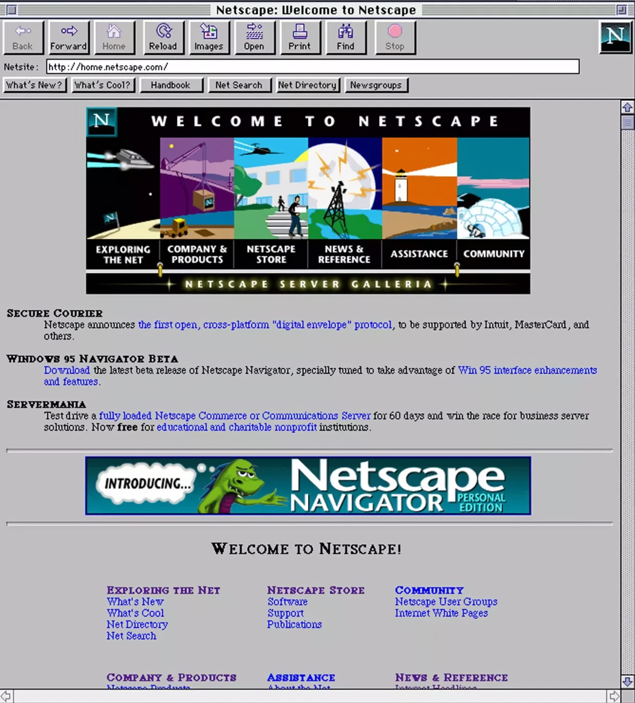
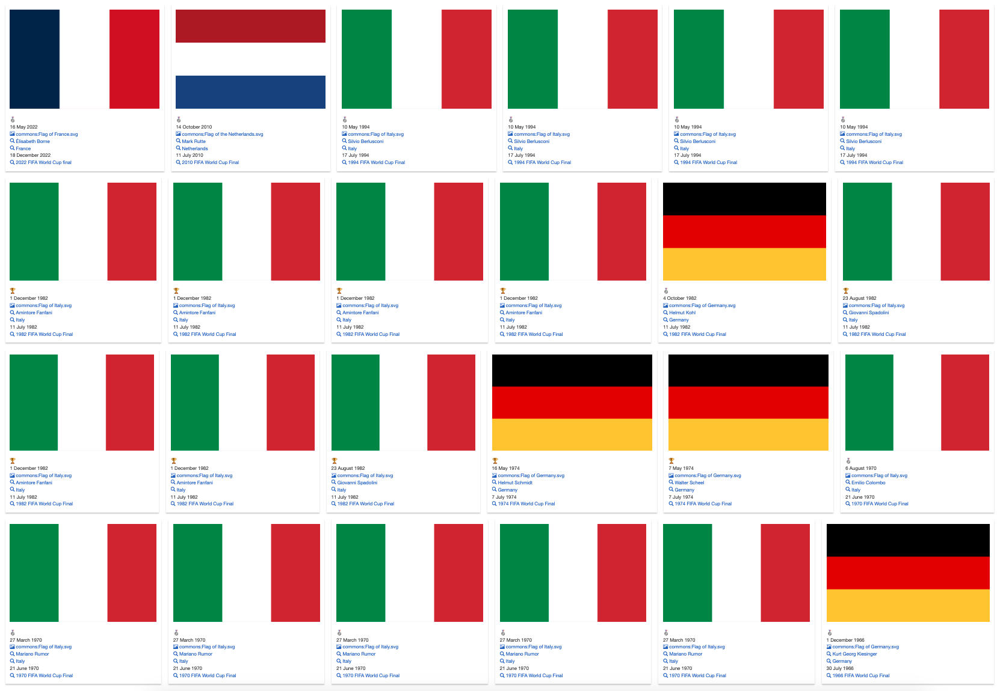
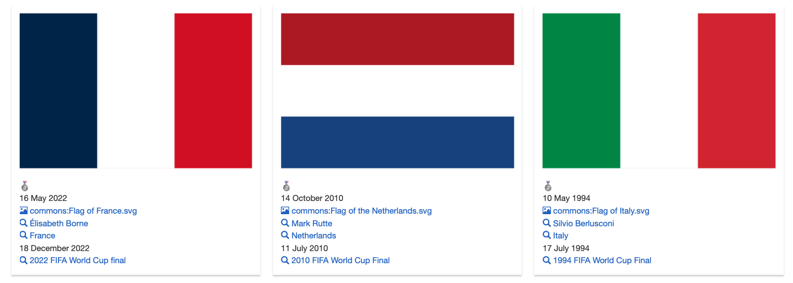
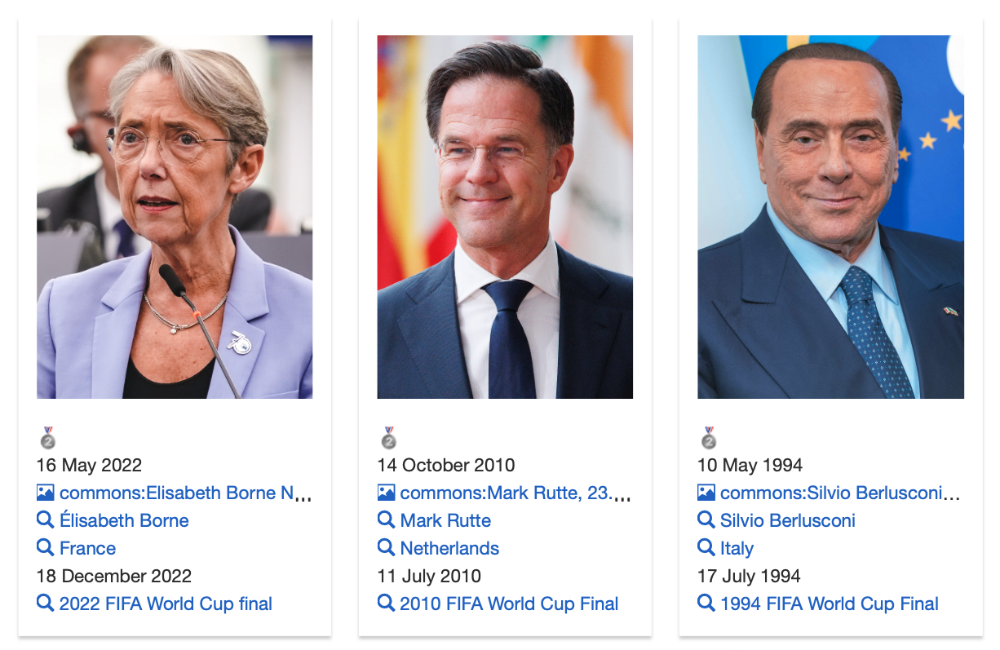
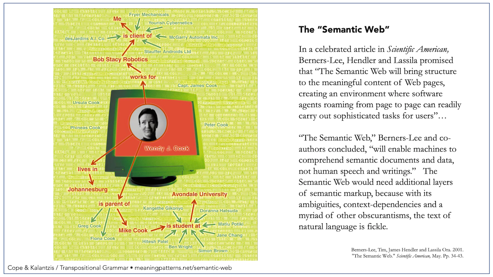
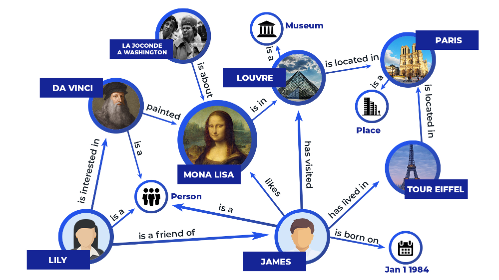
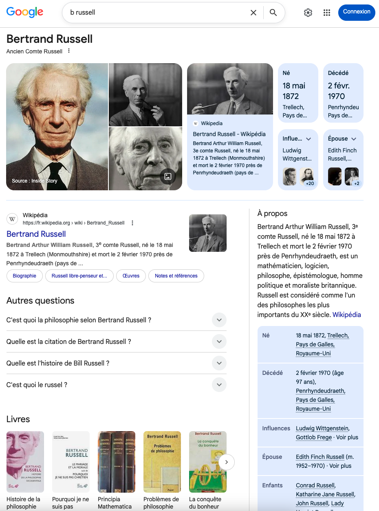
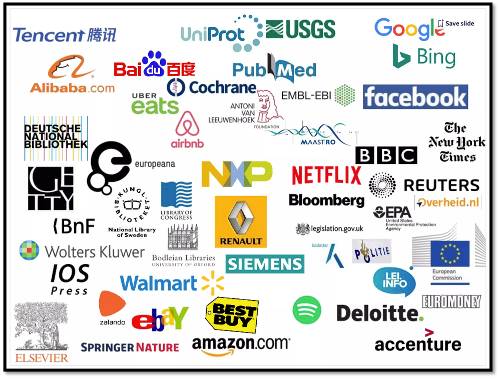

Graphes de connaissances :
fondements et applications
BACHELOR HEPTA
Joe Raad
Introduction
1. Le Web et ses limites
Contexte, histoire et pourquoi les machines peinent à exploiter les données du Web
Pourquoi commencer par le Web ?
Il représente l'écosystème et l'infrastructure de référence où sont générées et centralisées nos données.
Le revers de la médaille : cette immense bibliothèque textuelle laisse les algorithmes et les IA modernes aveugles face au vrai sens de ces données.
Le cœur de ce cours : apprendre à faire évoluer cette architecture pour interconnecter des connaissances brutes, enfin compréhensibles par les machines et exploitables par les utilisateurs.
Qu'est-ce que le Web ?
Web et Internet : deux choses distinctes
Infrastructure mondiale de réseaux et de protocoles (TCP/IP) permettant à des machines de communiquer. Né à la fin des années 1960 (ARPANET*, financé par la DARPA**).
Service parmi d'autres (email, FTP, VoIP) qui s'appuie sur Internet pour fonctionner. Il utilise des protocoles (HTTP) et des formats de données (HTML) spécifiques.
Le Web a été inventé environ 20 ans après Internet.
* ARPANET : premier réseau informatique militaire américain (1969).
** DARPA : agence de recherche avancée du département de la Défense des États-Unis.
Le premier site web

Encore accessible aujourd'hui : https://info.cern.ch
Le projet du web est proposé en 1989 par Tim Berners-Lee au CERN*
* Conseil Européen pour la Recherche Nucléaire, à Genève.
Tim Berners-Lee

- Informaticien britannique, né en 1955
- Propose le projet Web en 1989 au CERN
- Fonde le World Wide Web Consortium (W3C) en 1994 : l'organisme international qui gère les standards du Web (comme le HTML, CSS, SVG)
- Nommé Chevalier par la Reine d'Angleterre en 2004 (Sir Tim Berners-Lee)
Web 1.0 (1991-2004) : Le Web de Lecture

Les sites web sont statiques : les éditeurs publient les informations et les utilisateurs se contentent de les lire.
Technologies clés : HTML, HTTP, URL. La navigation se fait uniquement en cliquant sur des liens hypertexte de page en page.
Web 2.0 (2004 à aujourd'hui) : Le Web Participatif
Le contenu n'est plus seulement poussé par des éditeurs, il est massivement généré par les utilisateurs.
- Création collaborative : Wikis, blogs, forums, réseaux sociaux.
- Les interfaces deviennent fluides et applicatives (grâce aux technologies comme Ajax/JavaScript).
Le Web d'aujourd'hui en chiffres
Sources : ITU, Netcraft, DataReportal.
Les 2 angles morts du Web participatif
Le Web 2.0 excelle pour connecter les humains, mais manque d'architecture pour les machines.
1. L'opacité sémantique
Le sens des données n'est pas exprimé de façon formelle. Les machines ne peuvent donc pas en comprendre la signification.
2. Les silos de données
Les données sont réparties dans des bases isolées qui ne communiquent pas entre elles.
1. L'opacité sémantique
HTML gère le design. Les LLMs gèrent les probabilités. Il manque la logique formelle.
« Si A est le frère de B, et que B est le fils de C, et que C est la soeur de D... quelle est la relation entre A et D ? »
Face à cette question, un modèle de langage va deviner et risque l'erreur. Dans des domaines critiques (médecine, droit), la machine a besoin d'inférences mathématiques exactes, ce que l'architecture Web ne fournit pas nativement.
2. Les silos de données
Le Web sait connecter des documents, pas des bases de données hétérogènes.
Exemple : une question croisée
Pour mesurer l'impact des limites du Web, essayons de répondre à cette question qui croise sport, politique et temporalité :
Pourquoi c'est difficile pour une machine ?
Pour répondre, une machine doit croiser trois univers de données totalement séparés sur le Web actuel :
Les finales de la Coupe du Monde FIFA, les pays participants et les résultats, édition par édition.
L'historique de tous les mandats politiques de chacun de ces pays, avec leurs dates de début et de fin.
Le chevauchement temporel entre les deux événements, à l'année près, pour chaque pays.
L'approche de Google : L'Indexation
Un moteur de recherche se base principalement sur la présence statistique de mots-clés juxtaposés ("dirigeant", "finale", "pris le pouvoir").
- Il renverra des articles de blogs anecdotiques ou des pages Wikipédia séparées.
- Sa limite structurelle : il est incapable d'exécuter des "jointures logiques" entre les tableaux de tous les mandats politiques du monde et les tableaux des finales sportives.
Résultat : Google délègue la tâche à l'humain. C'est à l'utilisateur de cliquer sur des dizaines de liens pour effectuer le croisement mentalement.
L'approche des LLMs : La Probabilité
Un modèle de langage ne consulte pas une base de faits rigoureuse ; il génère le mot suivant le plus statistiquement probable d'après son entraînement.
- Face à des contraintes temporelles croisées aussi pointues, le modèle mélange facilement les associations de sa mémoire de texte.
- Le risque d'hallucination : Il peut modifier de quelques mois la date de passation de pouvoir pour valider la coïncidence, ou attribuer par erreur un titre de champion à un pays finaliste perdant.
Ces approches contournent le problème sans le résoudre
Pour résoudre le problème, il faudra repenser l'architecture même du Web.
L'évolution du Web
Web 1.0
Web Statique
L'utilisateur est un consommateur passif de pages HTML lues de manière isolée.
"Lire"
Web 2.0
Web Social / Collaboratif
L'utilisateur devient acteur (blogs, réseaux, wikis). Explosion des données non structurées.
"Écrire"
Web Sémantique
Web des données
Lier et structurer les données pour que les machines en comprennent le sens.
"Relier & Comprendre"
À ne pas confondre avec le Web 3.0 de la blockchain.
Le Web Sémantique
Transformer le Web textuel en une base de connaissances mondiale interconnectée, lisible par les machines.
La réponse : une requête SPARQL sur Wikidata
En reliant formellement les données, notre question se résout en une seule requête lisible par une machine comme par un humain.

Quatre blocs logiques : finales FIFA ➔ leurs scores ➔ pays et dirigeants ➔ coïncidence temporelle (année de prise de mandat = année de la finale).
Le résultat : la machine répond en < 5 secondes
Les données de centaines d'éditions FIFA et de pays et des milliers de mandats politiques... croisées instantanément.

Les résultats les plus récents


La machine ne devine pas : elle déduit.
Deux concepts, une même vision
Vision du W3C (Berners-Lee, 2001) : publier les données du Web avec un sens explicite via des standards ouverts.
Centré sur l'interopérabilité ouverte à l'échelle du Web entier.
Terme popularisé par les entreprises (Google, 2012) : base de données structurée en entités et relations, publique ou propriétaire.
Peut reposer sur les standards W3C (Wikidata, DBpedia...) ou sur d'autres technologies.
2. Graphes de connaissances
Histoire, intelligence artificielle & exemples concrets.
Du Web au Web Sémantique
<a href>, un hyperlien unidirectionnel à destination purement navigationnelle (pas de sens logique).
L'article fondateur
Formalisation de la vision du Web Sémantique dans le Scientific American en 2001.
Le Web Sémantique est une extension du Web actuel dans laquelle l'information reçoit un sens bien défini, permettant aux ordinateurs et aux humains de travailler en parfaite coopération.

Aux origines : la représentation des connaissances
Les graphes de connaissances, aussi appelés Knowledge Graphs (abrégé KG), héritent de décennies de recherche en IA symbolique.
IA symbolique : le défi de l'échelle
Les logiques formelles des années 1980-2000 étaient mathématiquement exactes, mais ingérables à l'échelle d'Internet.
Expressivité maximale, raisonnement correct et complet. Mais dans leurs versions les plus expressives, la complexité de calcul devient prohibitive à l'échelle du Web.
Conserver uniquement les fragments de logique utiles et calculables. Sacrifier un peu d'expressivité pour simplifier leur utilisation et gagner la scalabilité à l'échelle mondiale.
C'est ce compromis qui distingue les KGs des logiques du premier ordre : suffisamment expressifs pour être utiles, suffisamment simples pour être calculés sur des milliards de faits.
L'évolution des bases de données
Parallèlement à l'IA, le monde des bases de données cherchait à briser ses propres limites.
Un schéma figé, des jointures coûteuses entre tables et une structure difficile à faire évoluer face à des sources hétérogènes.
Un schéma ouvert et extensible : des données hétérogènes issues de sources multiples se lient naturellement, sans restructuration préalable.
Les KGs : une convergence de disciplines
Qu'est-ce qu'un graphe de connaissances ?
Une base de faits structurée, conçue pour être interrogée par des programmes informatiques capables d'en déduire de nouvelles connaissances.
Exemple de graphe de connaissances

Source : zilliz.com
Les graphes ouverts de référence
La communauté académique a construit des bases de connaissances ouvertes fondées sur les standards W3C.
D'autres initiatives majeures enrichissent cet écosystème ouvert, telles que YAGO, BabelNet ou GeoNames.
Applications dans les domaines critiques
Dans les secteurs où l'erreur factuelle est inacceptable, les graphes de connaissances s'imposent comme infrastructure de référence.
- UniProt : Graphe stockant plus de 200 millions de séquences protéiques, vital pour la recherche pharmaceutique.
- SNOMED-CT : Graphe clinique de plus de 300 000 concepts pour des inférences diagnostiques exactes.
- FIBO : Ontologie du domaine financier pour la conformité réglementaire et la gouvernance entre institutions.
- Global LEI : Graphe reliant de millions d'entités légales pour tracer la propriété des entreprises.
Dans ces contextes, le raisonnement formel remplace avantageusement les modèles statistiques qui produisent des réponses probables sans garantie d'exactitude.
Le Linked Open Data Cloud
Wikidata, DBpedia et les autres graphes ouverts ne fonctionnent pas en vase clos : ils sont explicitement liés entre eux par des références croisées en RDF, formant un écosystème de données ouvertes à l'échelle du Web.

Source : lod-cloud.net
Le tournant industriel : Google (2012)
En 2012, Google impose les graphes de connaissances comme infrastructure industrielle à son moteur de recherche.
"Things, not strings."
Le moteur ne doit plus chercher des chaînes de caractères mais indexer des objets du monde réel avec leurs propriétés et leurs relations — Amit Singhal (Blog Google, 2012)

Les grands graphes industriels
Après Google, les grandes plateformes ont toutes construit leur propre graphe de connaissances propriétaire.

Exemples d'usage
Les KG industriels répondent à des besoins métiers précis. Leur rapport aux standards W3C varie fortement d'un déploiement à l'autre.
Indexe des entités du monde réel (personnes, lieux, œuvres) pour alimenter l'infobox de recherche. Utilise schema.org, vocabulaire créé conjointement par Google, Microsoft, Yahoo et Yandex, pour annoter les pages web tierces.
Relie compétences, entreprises, offres d'emploi et formations à l'échelle mondiale. S'inspire des principes du Linked Data, mais dans une infrastructure entièrement propriétaire.
Connecte des milliards de produits, marques et catégories pour le moteur de recommandation. Architecture interne propriétaire, sans exposition RDF publique.
La complémentarité avec les LLMs
Les modèles de langage et les graphes de connaissances ne s'opposent pas : ils se complètent.
Compréhension du langage naturel, génération de texte, flexibilité face aux requêtes imprécises.
Limite : hallucinations factuelles, connaissances gelées à la date d'entraînement.
Faits vérifiés, traçabilité des sources, raisonnement formel, mise à jour en temps réel.
Limite : nécessite une modélisation structurée, moins flexible face au langage naturel.
Synthèse
Le Web a été conçu pour les humains. Rendre les données compréhensibles par les machines nécessite une couche structurelle supplémentaire : la sémantique formelle.
Un graphe de connaissances représente des faits sous forme de triplets sujet-prédicat-objet, avec des entités identifiées de façon non ambiguë.
Cette approche est aujourd'hui au cœur des grandes plateformes web et constitue l'infrastructure de référence dans les domaines critiques.